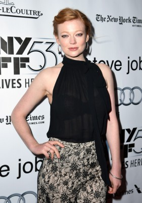

#8557 Sex ist (k)ein Kinderspiel

 IMDB-Wertung: 5.9 / 10
IMDB-Wertung: 5.9 / 10  Metascore: 0
Metascore: 0 
Der Playboy und Aufreißer Jonah lebt in den Tag hinein, ohne auch nur den Gedanken an eine feste Beziehung zu verschwenden. Wozu auch? Er steht in der Blüte seines Lebens, zur Hölle mit Einschränkungen und Verpflichtungen.Doch dann trifft ihn die brutale Diagnose: Schon bald wird er zeugungsunfähig sein. Und plötzlich sieht er sein Leben in einem anderen Licht. Mit einem Schlag weiß er, dass er nicht so weitermachen kann. Mit nur einem Monat Zeit, um seine Gene weiterzugeben, ändert sich seine Sichtweise auf Dinge wie Familie und Ehe. Er macht sich auf die Suche nach der Mutter für sein Kind und, vielleicht, die "Eine", an deren Seite er glücklich werden kann. Allerdings gestaltet sich das schwieriger als gedacht ...
Jahr: 2012
Dauer: 96 Minuten
FSK: 12
Land: Australien Studio: EuroVideoTonspuren: DTS - ,
Untertitel:
Auflösung: 1080p (1920x816) Größe: 5601 MB
Genre: Komödie, Liebe
Regisseur: Peter Templeman
Drehbuch: Marguerite Duras
Soundtrack: Matteo Zingales
Darsteller:
 Ryan Kwanten als Jonah
Ryan Kwanten als Jonah-  Sarah Snook als Stevie
 Ryan Corr als Gus
Ryan Corr als Gus Bojana Novakovic als Ava
Bojana Novakovic als Ava- Susan Prior als Marcie
- Lewis Fitz-Gerald als Dr. McKenzie
- Kathryn Beck als Becky Kincaid
- Zoe Carides als Lab Technician
 Alice Parkinson als Alison
Alice Parkinson als Alison- Lulu McClatchy als Jennifer
 Daniel Henshall als Dave
Daniel Henshall als Dave- Tasneem Roc als Miranda
- Katie Wall als Ex girlfriend in park
- Laura Brent als Ex girlfriend walking dogs
- Adele Vuko als Ex girlfriend in house
- Clare Bowen als Ex girlfriend in bar
- Dana Bettine als Girl with Jonah in Bar
- Gemma Laurelle als Extra: Party Girl (uncredited)
- Tracey Lee Maxwell als Extra: Tracey (uncredited)
- Stephanie May als Extra: Partygoer (uncredited)
- Margareta Moir als Extra: Cafe Patron (uncredited)
- Nicole Pastor als Extra: Waitress (uncredited)
- Belinda Bromilow als Claire
- Andrew Ryan als Cantzi
- Sam North als Smitty
- Apollo Kanakis als Silvio
- Lucy Coleman als Ex girlfriend in loading dock
- Annalouise Paul als Ex girlfriend's Mum
- Brianna Sinclair als Ellie
- Charlie Clancey-Agius als Baby Aidan
- Billy Beetson als Baby Aidan
- Loughlin Reynolds als Claire's Husband
- Amanda Sallybanks als Nurse
- Beau Lester als Policeman
- Troy Henman als Radiologist
- Taryn Brine als Extra: Party Girl (uncredited)
- Marlon Dance-Hooi als Extra: Partygoer (uncredited)
- Zac Deane als Extra: Party Guy (uncredited)
- Yolandi Franken als Extra: Hospital Visitor (uncredited)
- Chantelle Jamieson als Extra: Amy (uncredited)
- Andrew Johnston als Extra: Andy (uncredited)
- David Molloy als Extra: Partygoer (uncredited)
- Cristina Ventresca als Extra: Party girl (uncredited)
- Dave White als Extra: Partygoer (uncredited)
Datei: X:\2012(N-Z)\Sex ist (k)ein Kinderspiel (2012, FSK12, 1920x816).mkv seit 22.03.2018
Festplatte: HD 2012(N-Z)-2013(A-H)
 Es gibt insgesamt 138 Filme in der Gruppe '2012(N-Z)'
Es gibt insgesamt 138 Filme in der Gruppe '2012(N-Z)'